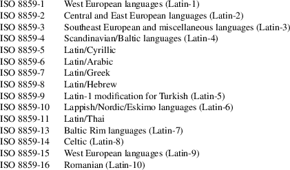
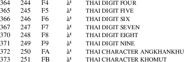

iso_8859-11 − ISO 8859-11 character set encoded in octal, decimal, and hexadecimal
The ISO 8859 standard includes several 8-bit extensions to the ASCII character set (also known as ISO 646-IRV). ISO 8859-11 encodes the characters used in the Thai language.
ISO 8859
alphabets
The full set of ISO 8859 alphabets includes:

ISO 8859-11
characters
The following table displays the characters in ISO 8859-11
that are printable and unlisted in the ascii(7)
manual page.

ISO 8859-11 is the same as TIS (Thai Industrial Standard) 620-2253, commonly known as TIS-620, except for the character in position A0: ISO 8859-11 defines this as NO-BREAK SPACE, while TIS-620 leaves it undefined.
ascii(7), charsets(7), utf−8(7)